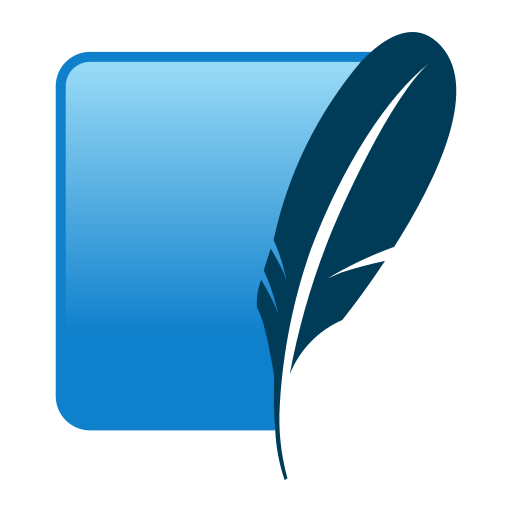
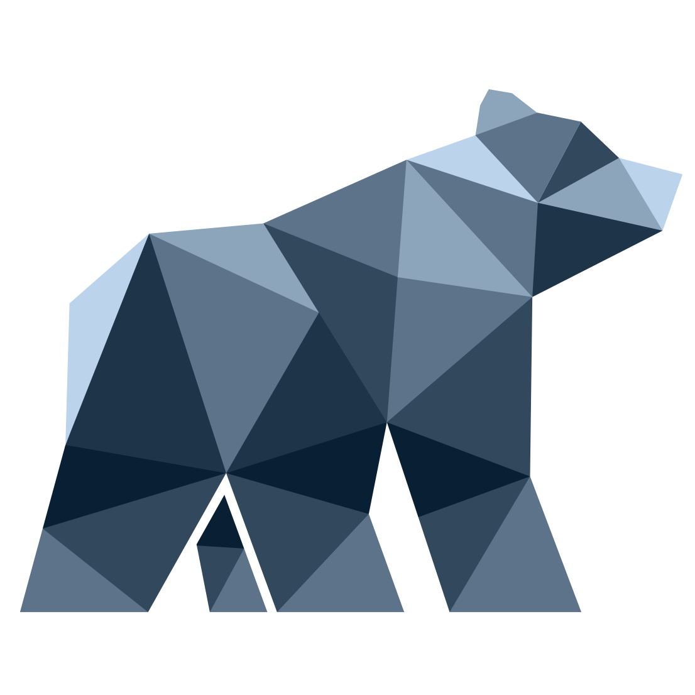
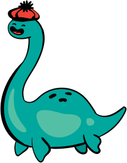
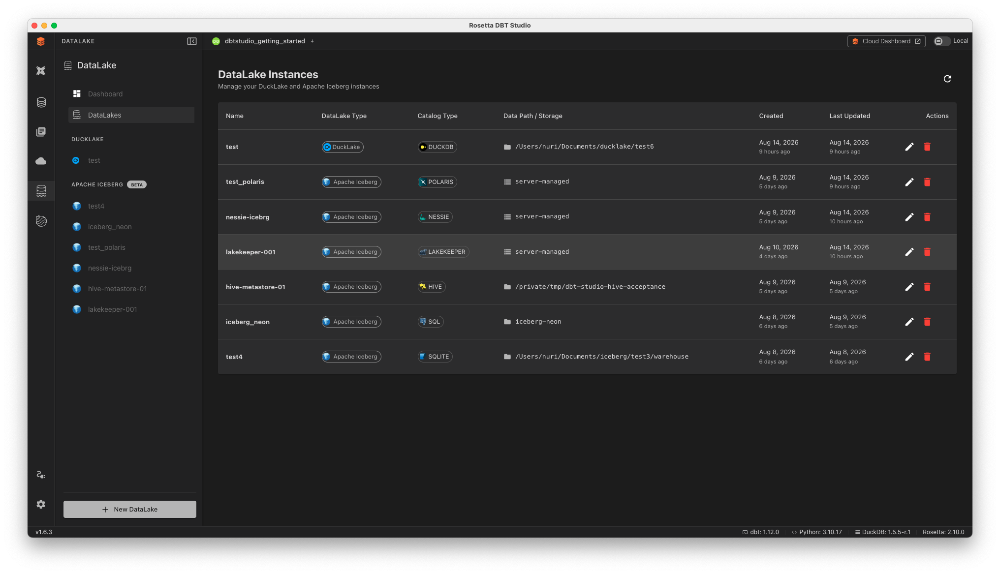
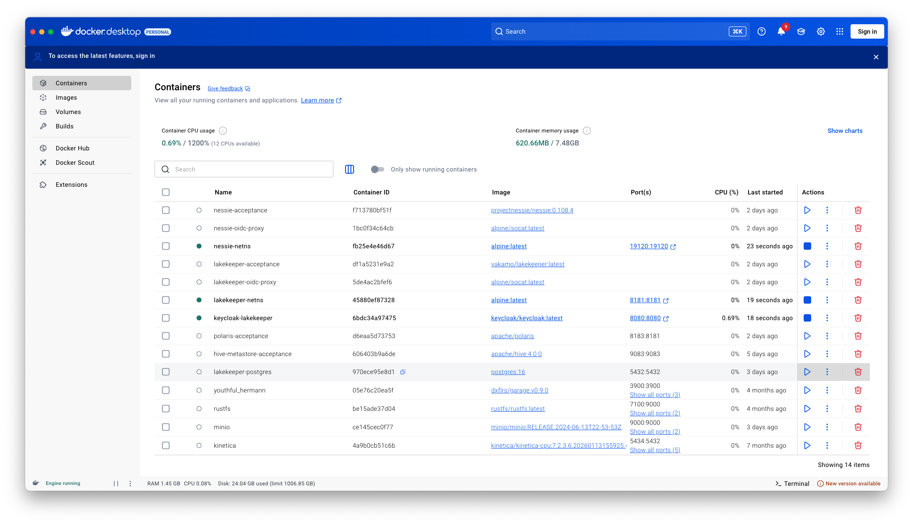
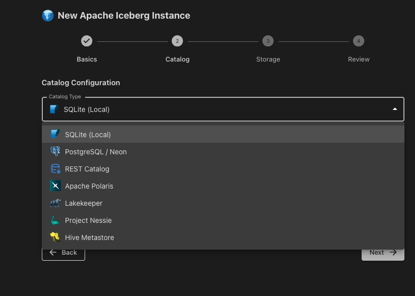
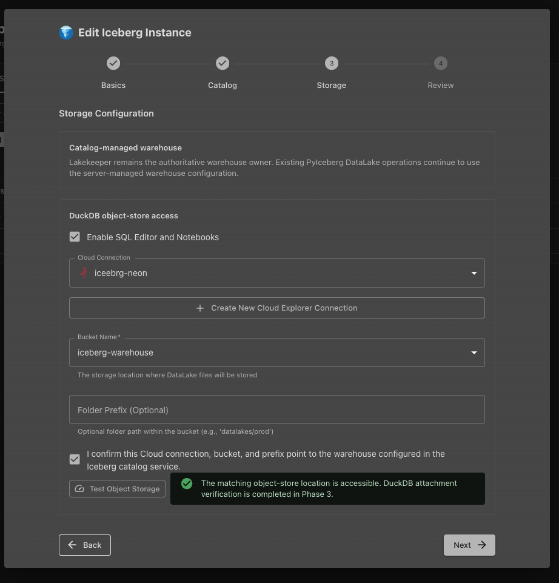

What we'll cover today
Iceberg Fundamentals
Why Iceberg exists, how it's structured, and what makes it revolutionary
Setting Up a DataLake
4-step wizard to connect any Iceberg catalog — from SQLite to Lakekeeper
Exploring & Querying
Browse namespaces, inspect schemas, time travel, and run SQL
Catalog Types
SQLite · SQL · Polaris · Nessie · Lakekeeper · Hive · DuckLake
AI-Powered SQL
Import CSV/Parquet data using the AI agent with natural language
Architecture
PyIceberg bridge, DuckDB extension, and object-store integration
The Catalog: the missing glue
How does a query engine find a table's metadata file? You can't hard-code an S3 path — it changes with every snapshot.
The Catalog does 3 things:
- 🗺️Maps table names → metadata file location in object storage
- ⚛️Atomic pointer swap — one atomic operation. Safe concurrent writes.
- 🤝Coordinates, never writes — your engine writes files. Catalog tracks current version.
Supported catalogs in Rosetta:

SQLite (Local)Zero-config local dev
 PostgreSQL / Neon
PostgreSQL / Neon
SQL-based catalog
Apache Polaris
REST catalog standard

LakekeeperREST + OAuth2 + MinIO

Project NessieGit-like branching
Hive Metastore
Legacy compatibility
All catalog types — one place
Every DataLake instance listed with catalog type, storage location, and timestamps. Edit or delete from the Actions column.

DataLake InstancesCreate a New DataLake
Click "+ New DataLake" and choose your data lake type. Rosetta supports four open-format technologies.
DuckLake
Local analytical powerhouse — no server needed
Apache Iceberg BETA
ACID, time travel, any catalog type
Delta Lake Soon
Linux Foundation open format
Apache Hudi Soon
Streaming upserts at data lake scale

Type SelectorWizard: Choose your catalog type

Catalog Type SelectorStorage: DuckDB object-store access
Storage options:
- 🏛️Catalog-managed warehouse — catalog server owns warehouse path
 Enable SQL Editor & Notebooks — attaches DuckDB to object store
Enable SQL Editor & Notebooks — attaches DuckDB to object store- ☁️Cloud Connection — pick from Cloud Explorer (MinIO, S3, GCS…)
- 🪣Bucket Name — exact bucket where Iceberg data files live

Storage ConfigurationHow Rosetta connects to Iceberg
Path A · Metadata Operations (Browse, Import, Time Travel)
Electron App
Electron IPC
Python Bridge
REST/Hive/SQL
S3/MinIO/GCS
Path B · SQL Queries (SQL Editor, Notebooks)
DBT Studio
DuckDB Node
Iceberg Ext
REST API
Direct file read
OS Keychain
Secrets via keytar — never plain text
Cloud Explorer
Reuses existing cloud connections
PyIceberg
Official Python library with native REST
DuckDB Iceberg
Direct catalog attachment for fast SQL